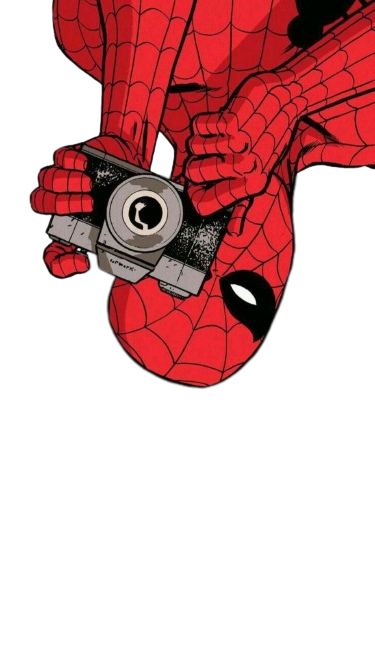

Menu Principal
CSS
Angular

Tarefas
4 agosto - 10 agosto
Tarefa:Pesquisa - Versões - HTML
11 agosto - 17 agosto
Tarefa:Página com comentários
18 agosto - 24 agosto
Tarefa:Hospedagem de sites
25 agosto - 31 agosto
Tarefa:Manual Angular
1 setembro - 7 setembro
Tarefa:Modelos de Listas
Aula:Listas
8 setembro - 14 setembro
Tarefa:Formulários
15 setembro - 21 setembro
Tarefa:7 - Introdução ao CSS
22 setembro - 28 setembro
Youtube:Menu Navbar Responsivo
29 setembro - 4 outubro / Atividades de CSS
Menu trabalhado em sala
Formulario Estilizado CSS
18 outubro - 25 outubro / Atividade combustível
Calcula entre etanol e gasolina
3 novembro - 9 novembro / Aplicação com JS
Televisão com um controle remoto
Extras
Tags Basicas
Ancora nos titulos